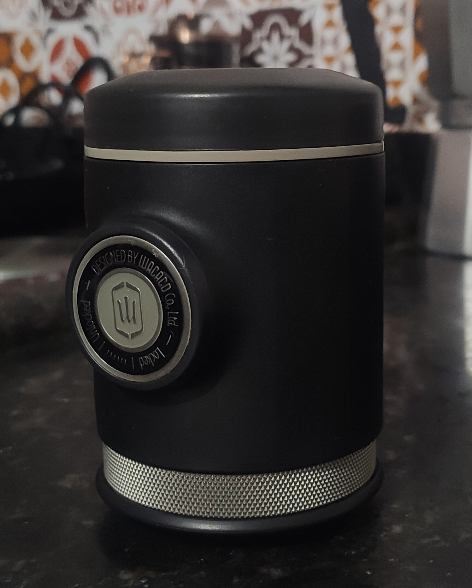

Espresso: picopresso

The Ultra-Portable Espresso
The Picopresso is the a really capable manual
espresso machine, but requires some good skill
in order to make use of it's full potential.
Equipments
- Picopresso machine
- A Good, espresso capable grinder
- Scale at least to .1 of a gram
- Water boiling device
- Some receptacle for the coffee
Ingredients
- Freshly roasted coffee beans
Steps
- Weight 17-19g of coffee grounds
- Grind the grounds within espresso range
- Boil the water
- Pre heat the machine
- Distribute and tamp the coffee on the basket
and porta-filter
- Brew the coffee:
- Pump 8-10 times for the pre-infusion
- Wait about 10 seconds, it will start
dripping
- Restart pumping at a steady, but not
rushed, pace, always weighting the output
until the desired weight ratio
- Drink the coffee: it seems obvious
but it is REALLY important. Make every
adjustment in your process based on taste,
not on anything else